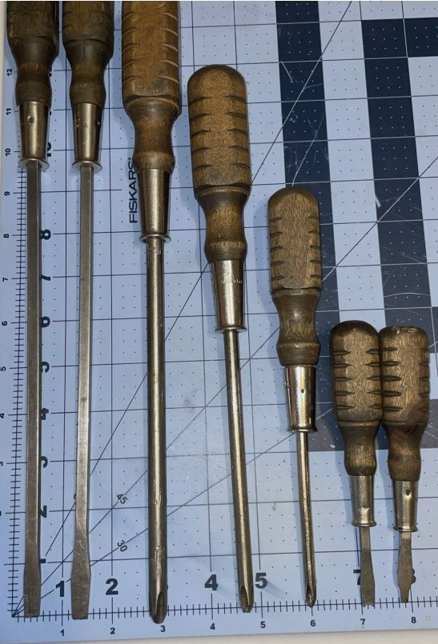
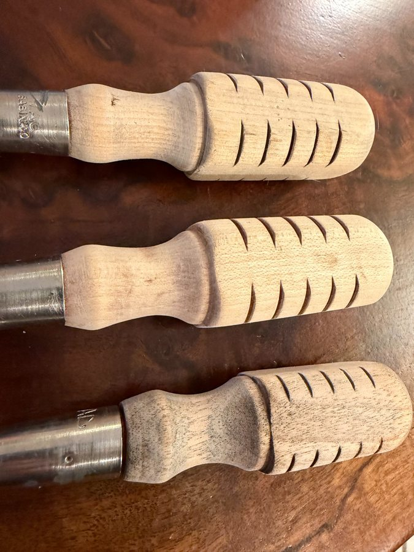
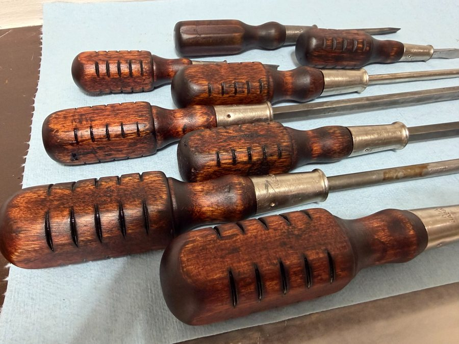

The Phillips head problem.
I have a problem. It involves "perfect handle" style screwdrivers, and it has cost me considerably more money than I'd like to admit. Over the past year or so I've picked up somewhere between 10 and 15 of them — eBay, Facebook Marketplace, Shopgoodwill, lucky finds at antique shops — and I don't plan to stop. The turned wooden handles, the weight, the way they sit in the hand. There's nothing like them.
My only complaint: nobody made perfect handle screwdrivers with Phillips heads. Or if they did, I haven't been able to find them. So for a long time I was running a mixed set — vintage flatheads I loved, and modern Phillips drivers I tolerated.
That changed when my father-in-law passed along a single old Mac Tools wooden-handle screwdriver with a Phillips tip. One. I immediately went looking for more.
"Nobody made perfect handle screwdrivers with Phillips heads. Or if they did, I haven't been able to find them."
eBay delivered: a 7-piece Mac Tools set — 3 Phillips, 4 flathead — for around $40. Post-WWII American manufacture, chrome-vanadium blades, original ferrules. When they arrived, the bones were solid. The steel was sound, the ferrules were intact, nothing was bent or broken. But aesthetically? Rough. Decades of shop grime, oil-saturated handles, surface staining that wasn't coming off with a wipe-down. I wanted these to be beautiful. That was going to take some work.
Post-WWII Mac Tools. Chrome-vanadium and beech.
Mac Tools was founded in 1938 in Ohio and became one of the premier professional tool brands in the US through the mid-20th century. The wooden-handle screwdrivers from this era were built for tradespeople — designed to be used hard, not displayed. Chrome-vanadium steel blades that hold an edge, original ferrules, and turned handles in what appears to be beech — a dense, pale hardwood that absorbs dye and finish beautifully.
The 7-piece set covers the range a working shop actually needs: three Phillips sizes and four flathead sizes, from small-tip detail work up to serious leverage. Having the full set in matching handles, all with the same finish, was the whole point of this project. One orphaned driver inherited from a father-in-law became the anchor for a complete working set.
The handles needed everything: degreasing, sanding back to bare wood, stain removal, dyeing, finishing. The steel needed cleaning and polish — that part is still in progress, and I'll update the photos when it's done.
Structurally sound. Cosmetically rough.
Decades of shop oil and grime had worked deep into the beech. The handles weren't damaged — the wood was dense enough to survive the abuse — but the surface staining was significant. You could see the quality underneath. It just needed to be excavated.

Clean first. Beautiful second.
The plan had three distinct phases, and skipping any one of them would have compromised the result.
Phase 1 — Strip and clean. Get back to bare wood. Everything on the surface had to go: the grime, the old finish, the deep staining. This was going to require more than sanding.
Phase 2 — Color. Plain beech is nice, but nice isn't the goal. I wanted dimensional color — the kind that looks like it comes from inside the wood, not sitting on top of it. That meant dye, not stain, and a layered process I'd been thinking about for a while.
Phase 3 — Finish. Seal and protect, with a surface that feels right in the hand. Walrus Oil for depth, Renaissance Wax for protection and sheen. The same finishing sequence I trust on everything.
The metal work — polishing the ferrules and chrome-vanadium shafts — is its own project. I'll tackle that separately and update the photos when it's done.
Strip, clean, dye, finish. In that order.
Mineral spirits — twice. First pass: wipe down each handle with a rag soaked in mineral spirits to cut through the surface grime. Second pass: a scrub with a soft brass brush and fresh mineral spirits to get into the grooves and knurling. (The toothbrush was not my wife's. I want to be clear about this.) Let everything dry completely before moving to sanding.
Sanding — 60 through 220. Worked through the full progression: 60 grit to cut through the hardened surface oil and get back to bare wood, then 80, 120, 180, and 220 to refine. By 220, the handles looked considerably better — clean, pale beech with the grain starting to show. But some deep staining remained, and plain pale beech wasn't the final destination anyway.
Oxalic acid baths. This was the step that made the difference on the stubborn staining. Multiple baths and scrubbings with oxalic acid pulled tannin staining and surface discoloration that sanding couldn't reach. The results were surprisingly good — handles came out genuinely clean, not just cleaner. I'll be using this process on future restorations. Let dry for one to two days before dyeing.


The dye: three phases, one result.
This is the part of the process I was most uncertain about — and the part I'm most pleased with. Layering Fiebing's leather dye in sequence builds dimensional color that a single application can't achieve. The black base lives in the shadows; the mahogany top coat glows where the light hits. Here's exactly what I did:
-
Phase 1 — Fiebing's Black · 1:4 dye to denatured alcoholApplied with a rag (gloves on — always gloves), worked into the grain, wiped off after about 2 minutes. The black pulls back when wiped but stays in the pores and grooves. Let dry 1 hour, then scuff lightly with 300 grit. This creates the shadow layer that makes everything else look deeper.
-
Phase 2 — Fiebing's Dark Brown · 1:3 dye to denatured alcoholApplied over the black base. Let sit for about 5 minutes, then wipe. The brown softens the black and starts to build the warmth. 300 grit scuff again after drying — this keeps the surface from going muddy and helps each layer adhere cleanly to the next.
-
Phase 3 — Fiebing's Mahogany · 1:2 dye to denatured alcoholThe final color layer — the richest concentration of the three. Applied and left to sit 5–10 minutes before a thorough wipe-down. Full 24-hour dry time before touching them again. The result is a warm, reddish-brown that catches the light differently than any single-coat dye application I've seen.
"The black base pools in the knurled grooves, creating natural contrast. The mahogany top coat glows where the light hits. It looks like it comes from inside the wood."
0000 steel wool. After the full 24-hour dry, I rubbed the handles fairly aggressively with 0000 steel wool. This levels the raised grain from the dye application and creates a surface the oil can soak into evenly. Don't skip this step — it's the difference between a finish that looks applied and one that looks like it belongs.
Walrus Oil — three coats. Same process as always: thin coat, 10–15 minutes absorption, wipe thoroughly with a lint-free cloth, 24 hours drying with airflow between each coat. Three coats total. The color deepens noticeably with each coat.
Dewaxed shellac — one wash coat. After the Walrus Oil cured fully, one thin wash coat of dewaxed shellac. This seals the oil and gives the Renaissance Wax a cleaner surface to bond to — without it, wax over straight oil can go soft or uneven over time. Wipe on thin, let flash off fully (fast with shellac), then move straight to wax.
Final prep and Renaissance Wax. Light buff with 0000 steel wool after the shellac cured. Wipe down with a clean lint-free cloth. Two very light coats of Renaissance Wax, each allowed to haze over before buffing with a clean cotton rag. The result is a soft, period-appropriate sheen — nothing plastic, nothing glossy. Just right.
The dye doing its job.


If you squint, it's mint.

Worth every hour.
The Honest Take
The Fiebing's layered dye process is unconventional on tool handles — and completely worth it. The color isn't flat. It has depth. The black pools in the grooves and the mahogany glows on the surface, and the whole thing looks like it spent decades developing character rather than an afternoon in the workshop.
The set solves a real problem: quality wooden-handle screwdrivers with Phillips tips. They don't exist new. Now I have seven of them, and they're better-looking than anything on the market. If the ferrule and shaft polish comes out as well as I think it will, this might be my favorite project so far.
One thing I'd change: I used 0000 steel wool between the dye and the oil. It worked, but I'd also consider using it between each dye layer for even more control. Something to try on the next set.
Everything that touched these handles.
Some links below are affiliate links — I earn a small commission if you buy through them, at no extra cost to you. I only list what I actually used.
- Mineral SpiritsTwo passes: rag wipe-down then a soft brass brush into the grooves. Gets the surface grime before sanding.
- Sandpaper — 60, 80, 120, 180, 220 gritFull progression back to bare wood. The 60 cuts through hardened oil; 220 refines before dyeing.
- Oxalic AcidMultiple baths and scrubbings for stubborn tannin staining. Surprisingly effective — will use on every future restoration with staining issues.
- Fiebing's Black Leather DyePhase 1: 1:4 dye to denatured alcohol. Applied and wiped after 2 minutes. Creates the shadow base that lives in the pores and grooves.
- Fiebing's Dark Brown Leather DyePhase 2: 1:3 dilution. Softens the black and builds warmth. 300 grit scuff between phases.
- Fiebing's Mahogany Leather DyePhase 3: 1:2 dilution, 5–10 minutes before wiping. The final color layer. Full 24-hour dry after this.
- Denatured AlcoholThe carrier for all three dye dilutions. Adjust ratio to control intensity.
- 300 Grit SandpaperLight scuff between dye phases to prevent muddy buildup and help each layer adhere cleanly.
- 0000 Steel WoolAggressive rub after 24-hour dye cure, and again lightly after final Walrus Oil coat. Levels grain and creates an even surface for the finish.
- Walrus Oil (Polymerized Tung Oil)Three coats, 24 hours between each. Thin application, 10–15 min absorption, wiped with lint-free cloth.
- Dewaxed ShellacOne wash coat between Walrus Oil and Renaissance Wax. Seals the oil so the wax bonds evenly and doesn't go soft over time.
- Renaissance WaxTwo light coats to finish. Hazes over in 10 minutes, buffed with clean cotton rag. Soft, period-appropriate sheen.